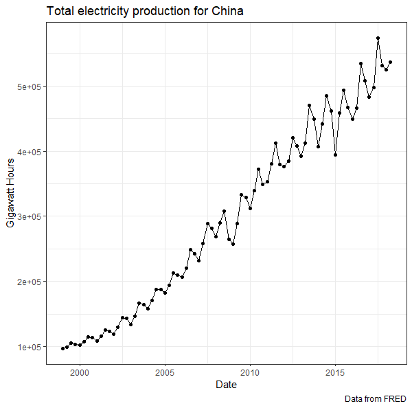

In this self-paced guide, you will review: (a) forecasting and time-series data definitions, and (b) the use of R to extract data (through both the read.csv() and tq_get() functions). This review is optional, but if you plan on completing it, you are advised to do the following prior to attempting the tutorial.
Please close this tab after completing the tutorial to reduce the useage on our FSB server.
Based on our textbook, a forecast is a prediction or estimate of an actual outcome expected in a future time period or for another situation.
- The purpose of forecasting is to inform the process of planning.
- The purpose of planning is to develop a course of action so that things don't “just continue” based on a no-change forecast.
One of the important concepts from Week 01 was to distinguish between the terms: (a) cross-sectional data, (b) time-series data, and (c) panel data. Let us examine your understanding of these three terms.
grunfeld, and print the data.frame. Note that you can use a csv link as an input to the read.csv() (i.e., just copy the link address and input it to the function).
grunfeld = read.csv("http://people.stern.nyu.edu/wgreene/Econometrics/grunfeld.csv")
grunfeldPlease extract the following series PRENEL01CNQ656N from FRED into R. This can be done using the tidyquant package:
tq_get() is the time series of interest.?tq_get() see how to change the get argument to capture data from FRED.1999-01-01.After following the above instructions, please recreate the graph below.
tepc = tq_get('PRENEL01CNQ656N', get = 'economic.data', from = '1999-01-01')cat("Note that my figure contains two different geometries (points and lines).")tepc = tq_get('PRENEL01CNQ656N', get = 'economic.data', from = '1999-01-01')
tepc %>% ggplot(aes(x= date, y = price)) +
geom_line() + geom_point() +
labs(title = "Total electricity production for China", y = "Gigawatt Hours", x = "Date",
caption = "Data from FRED") + theme_bw()